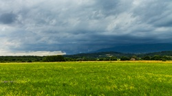

<!DOCTYPE html>
<html lang="en">
<head>
  <meta charset="utf-8" />
  <meta name="viewport" content="width=device-width, initial-scale=1.0"/>
  <title>CroatianStorm's chase archive</title>
  
  <link rel="stylesheet" href="https://unpkg.com/leaflet@1.9.4/dist/leaflet.css" crossorigin="" />
  <script src="https://unpkg.com/leaflet@1.9.4/dist/leaflet.js" 
          integrity="sha256-20nQCchB9co0qIjJZRGuk2/Z9VM+kNiyxNV1lvTlZBo=" 
          crossorigin=""></script>
  <!-- Leaflet Routing Machine (added) -->
  <link rel="stylesheet" href="https://unpkg.com/leaflet-routing-machine@latest/dist/leaflet-routing-machine.css" />
  <script src="https://unpkg.com/leaflet-routing-machine@latest/dist/leaflet-routing-machine.js"></script>
  
  <style>
    html, body, #map { height: 100%; margin: 0; padding: 0; }
    /* Optional: nicer tooltip look */
    .custom-tooltip {
      background: rgba(0,0,0,0.75);
      color: white;
      border-radius: 4px;
      padding: 4px 8px;
      font-size: 13px;
      border: none;
    }
  </style>
</head>
<body>
  <div id="map"></div>

  <script>
    var map = L.map('map').setView([45.1, 16.0], 7);

    L.tileLayer('https://{s}.tile.openstreetmap.org/{z}/{x}/{y}.png', {
      attribution: '&copy; <a href="https://www.openstreetmap.org/copyright">OpenStreetMap</a> contributors',
      maxZoom: 19
    }).addTo(map);
    map.invalidateSize();

// Variable to store the route (so we can remove it later)
    var currentRoute = null;
    // Zagreb (starting point of the chase)
    var zagreb = [45.7994, 15.9786];
    //waypoint to highway
    var zagrebistok = [45.8008, 16.0546];
    //Komin
    var komin = [46.0018, 16.2822];
    // The storm location (your marker)
    var popovecLocation = [45.8532, 16.1388];
    
  // Marker location example
var popovecMarker = L.marker(popovecLocation, {
  icon: L.icon({
    iconUrl: 'images/location.png',          // path to your icon image in repo
    iconSize: [32, 32],                   // size in pixels [width, height] - adjust to fit your image
    iconAnchor: [16, 32],                 // point of the icon that "pins" to the location (center-bottom usually)
    popupAnchor: [0, -32],                // where popup opens relative to icon (above it)
    tooltipAnchor: [0, -20]               // where tooltip opens
  })
})
  .bindTooltip("Storm chase 13.07.2023.", {
    permanent: false,
    direction: 'top'
  })
  .bindPopup(
    '<div style="text-align:center; min-width:180px;">' +
      '<h4 style="margin:8px 0 4px;">Storm chase 13.07.2023.</h4>' +
      '' +
      '<p style="margin:4px 0; font-size:13px;">Superćelija na potezu Popovec - Čazma</p>' +
      '<a href="stormchasetest.html" target="_blank" ' +
         'style="display:inline-block; padding:6px 12px; background:#0066cc; color:white; ' +
                'text-decoration:none; border-radius:4px; font-weight:bold;">' +
         'Read full story →' +
      '</a>' +
    '</div>',
    {
      maxWidth: 220,          // keeps it small & mobile-friendly
      className: 'custom-popup'  // optional: for extra styling
    }
  )
  .addTo(map);
    
  // ---- NEW: Show route when popup opens, hide when it closes ----
    popovecMarker.on('popupopen', function() {
      if (currentRoute) currentRoute.spliceWaypoints(0, 2); // clear old route if any

      currentRoute = L.Routing.control({
        waypoints: [
          L.latLng(zagreb),
          L.latLng(zagrebistok),
          L.latLng(komin),
          L.latLng(popovecLocation)
        ],
        createMarker: function() { return null; }, // hide extra markers
        addWaypoints: false,
        routeWhileDragging: false,
        show: false,                    // hide the instruction panel
        lineOptions: {
          styles: [{color: '#0066cc', weight: 6, opacity: 0.8}]
        }
      }).addTo(map);
      
      // Wait for the route to be fully calculated
        currentRoute.on('routesfound', function(e) {
          var routeLine = e.routes[0].coordinates;  // or just use the control's internal line
      
          // Now safe to get real bounds
          var bounds = L.latLngBounds(e.routes[0].coordinates);
      
          map.fitBounds(bounds, {
            padding: [250, 250],     // ← your desired zoom-out level (adjust higher if needed, e.g. [200, 200])
            maxZoom: 11              // ← prevents too close zoom on short routes
          });
        });
      });


    popovecMarker.on('popupclose', function() {
      if (currentRoute) {
        map.removeControl(currentRoute);
        currentRoute = null;
      }
      // Optional: return to original view
      map.setView([45.1, 16.0], 7);
    });
  </script>
</body>
</html>
